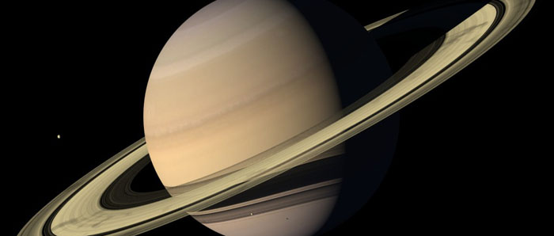
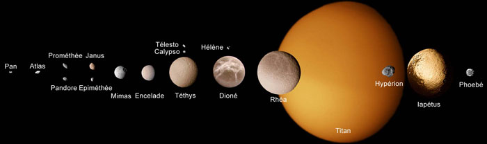

Saturne
Sixième planète à partir du Soleil, la plus grosse après Jupiter, avec un diamètre équatorial de 120 000 km. C'est aussi la plus légère, d'une densité inférieure à celle de l'eau - elle pourrait flotter ! Saturne possède une orbite excentrique, se trouvant à 1 507 000 000 km du Soleil à l'aphélie et à 1 374 000 000 km au périhélie, qu'elle boucle en 29,5 ans.
Comme Jupiter, Saturne est une géante gazeuse aplatie aux pôles. Elle effectue un tour rapide sur elle-même en 10 h 39 mn, tournant plus vite à l'équateur qu'aux pôles. Cependant, contrairement à Jupiter, son axe de rotation est incliné et elle connaît donc des saisons. La température de son atmosphère atteint -160 °C au sommet de sa couche nuageuse, mais à tout moment celui des pôles qui est le plus incliné vers le Soleil présente une température de quelques degrés plus élevée. Saturne possède la même structure interne que Jupiter, soit un petit noyau rocheux entouré d'hydrogène sous phase métallique, puis liquide, le tout enveloppé d'une épaisse atmosphère turbulente faite d'hydrogène et d'hélium. Ses température et pression centrales atteignent respectivement 12 000 °C et 8 millions d'atmosphères.

Source : Lien
Les anneaux de Saturne
Une série d'anneaux ceinture la planète au niveau de l'équateur. Ils sont inclinés comme elle d'un angle de 27°. Leur diamètre est de 275 000 km et ils sont composés de trois bandes distinctes. Les deux anneaux externes, les plus lumineux, sont séparés par une zone sombre ne contenant que peu de particules (la division de Cassini). L'anneau interne, sombre et semi-transparent, a été baptisé l'anneau de crêpe.
Ces anneaux sont formés de particules de glace dessinant une multitude d'anneaux individuels, de tailles échelonnées entre le gros bloc et le grain de poussière. Diverses hypothèses ont été émises sur l'origine des anneaux, mais il est probable qu'ils se sont formés en même temps que Saturne.
Satellites de Saturne

Portrait d'une partie de la grande famille des satellites de Saturne : 18 sur 30. L'échelle n'est pas strictement respectée, mais donne une bonne idée des rapports de taille entre les différentes lunes.
Source : Lien
Saturne est entouré de 21 satellites, le plus gros, Titan, étant de la taille d'une petite planète, les autres bien moins volumineux. Leurs orbites sont toutes situées plus ou moins dans le plan équatorial de la planète, sauf une. Les missions Voyager nous ont appris beaucoup sur eux. Rhéa et Japet sont les plus gros après Titan, mesurant respectivement 1 530 km et 1 440 km de diamètre. Le plus petit, Phoebé, a un diamètre de 160 km. Ils sont tous formés essentiellement de glace, mais présentent des densités et visages très différents.
Source : Étoiles et planètes, Gründ, 1988
Plan du site | Contact | Site réalisé par Mathieu Morainville.